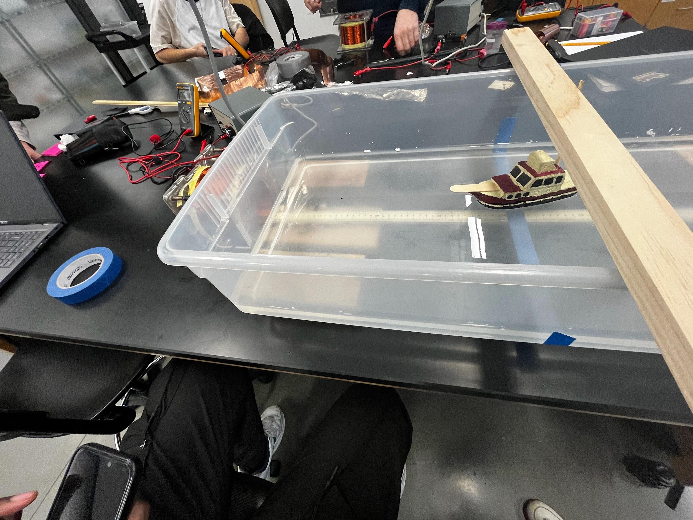
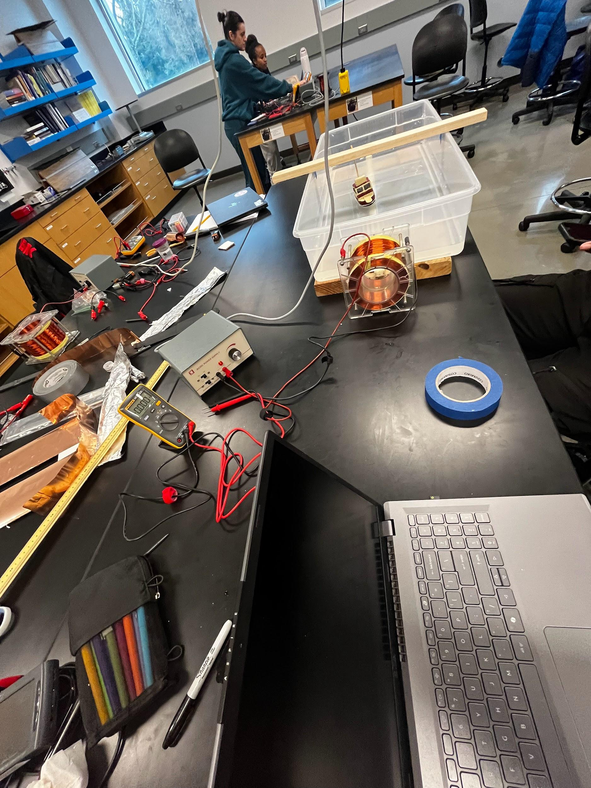

PHYSICS 222 · TEAM LAB
Magnetic boat.
Testing how changing current through a solenoid affects the travel time of a magnet-equipped boat.

THE QUESTION
Does more solenoid current make the boat move faster?
Our team placed a magnet-equipped boat in a water tub near a solenoid. We varied the supply voltage, calculated current using the measured 62 Ω resistance, and timed the boat across the same 28.5 cm span in repeated trials.
Across four current settings, average travel time fell from 20.1 s at about 0.19 A to 12.5 s at about 0.34 A. We used the distances and times to estimate average velocity and acceleration. The observed trend was faster travel at higher current.
Water and air resistance, waves, sideways turning, and a nonuniform magnetic field could all influence the result. The team proposed guiding the boat with a string in a future test to reduce turning.
We worked as equal members of the lab group, sharing the tasks that needed to be done throughout the experiment and presentation.

METHOD & ITERATION
From setup to evidence.
- Hold the travel span and boat mass constant across tests.
- Repeat measurements at four voltage and current settings.
- Identify turning and field uniformity as limits on the measurements.
WHAT I TOOK AWAY
What the lab taught me.
Changing one input across repeated trials exposed a clear trend while also showing where the setup could be improved for better control.
← Back to projects